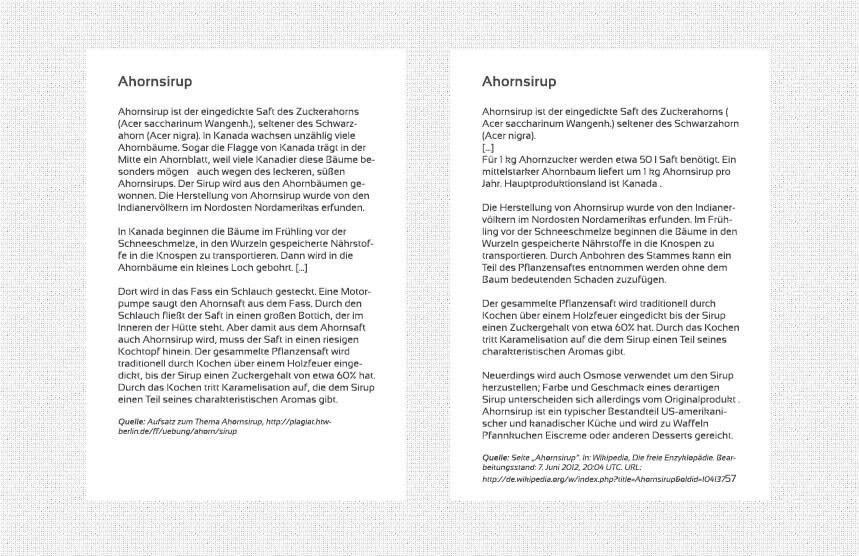
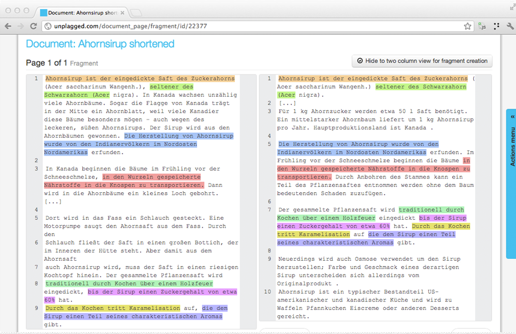
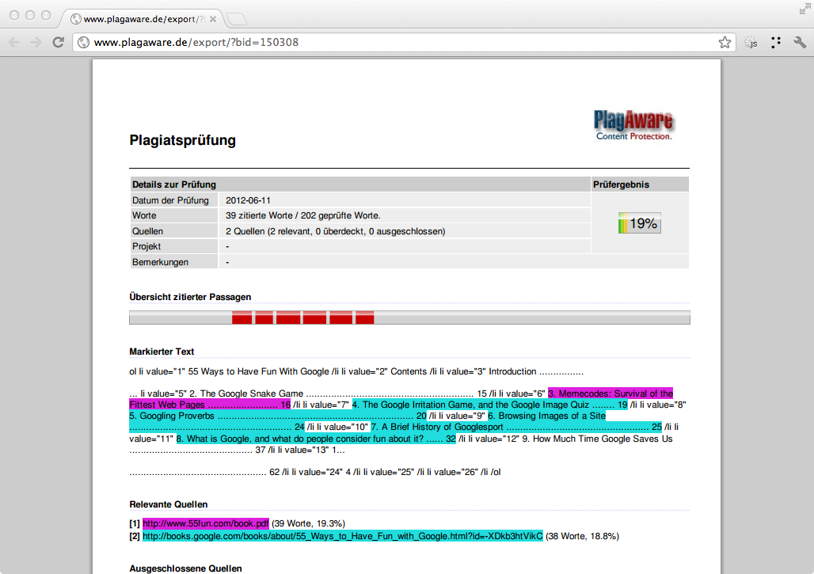
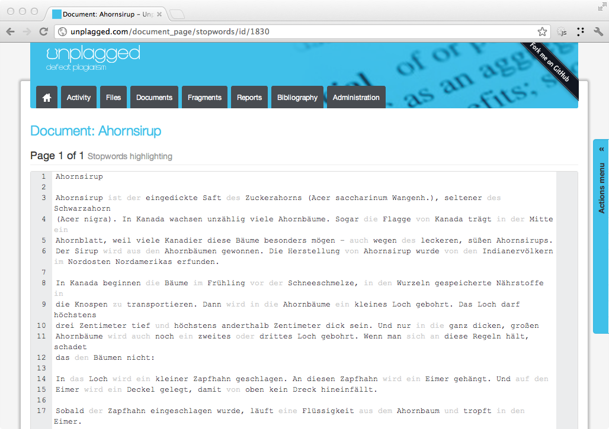
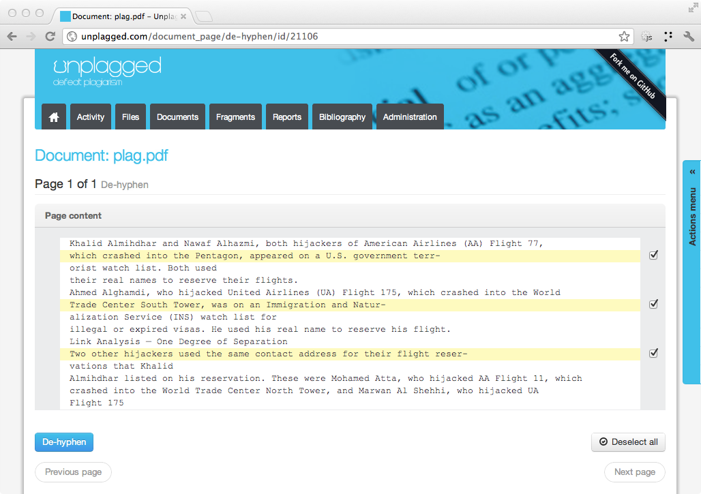
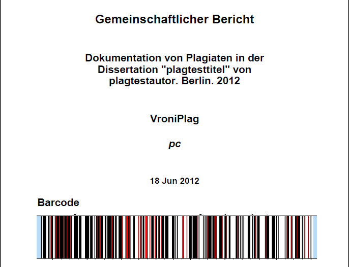
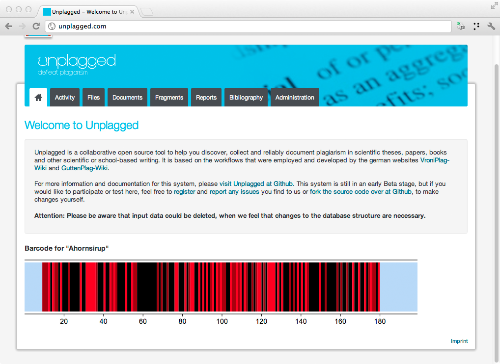
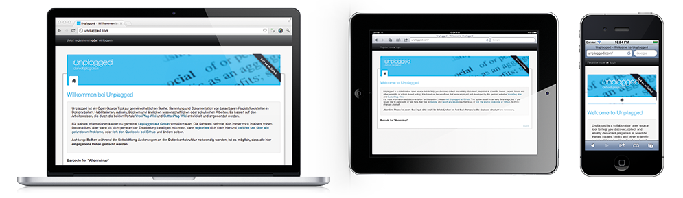

Plagiarism detection workbench
Unplagged is a collaborative open source tool to help you discover, collect and reliably document plagiarism in scientific theses, papers, books and other scientific or school-based writing. It is based on the workflows that were employed and developed by the german websites VroniPlag-Wiki and GuttenPlag-Wiki.
Plagiarism is the claim of intellectual work of others. This may be the adoption of foreign texts or other representations (e.g., newspapers, magazine articles, photographs, films, sound recordings), foreign ideas (e.g., inventions, design, scientific discoveries, melodies) or both (e.g. scientific publications, art, novels).
"Ein Plagiat (über frz. aus lat. plagium ‚Menschenraub‘[1]) ist die Anmaßung fremder geistiger Leistungen. Dies kann sich auf die Übernahme fremder Texte oder anderer Darstellungen (z. B. Zeitungs-, Magazinartikel, Fotos, Filme, Tonaufnahmen), fremder Ideen (z. B. Erfindungen, Design, Wissenschaftliche Erkenntnisse, Melodien) oder beides gleichzeitig (z. B. Wissenschaftliche Veröffentlichungen, Kunstwerke, Romane) beziehen." Seite „Plagiat“. In: Wikipedia, Die freie Enzyklopädie. Bearbeitungsstand: 1. Juli 2012, 07:45 UTC. URL: http://de.wikipedia.org/w/index.php?title=Plagiat&oldid=104973973 (Abgerufen: 6. Juli 2012, 12:25 UTC)
Others: Completely automated process.
We: Facilitate swarm intelligence and assist user workflows.








Use a spacebar or arrow keys to navigate